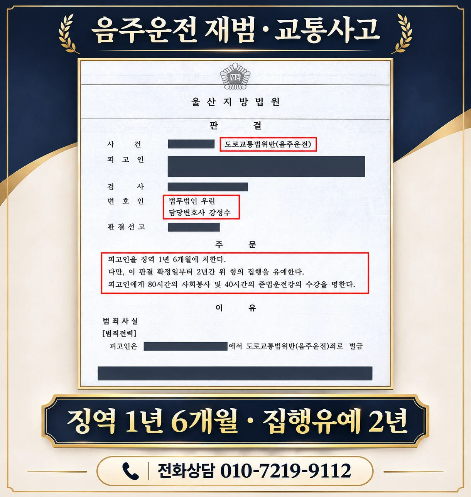

핵심 결과
의뢰인은 과거 음주운전으로 한 차례 벌금형을 받은 뒤 약 6년이 지나 다시 음주운전을 했고, 운전 과정에서 교통사고까지 발생했습니다.
재범과 사고가 함께 문제 된 사건이어서 실형 가능성을 가볍게 볼 수 없었습니다.
사고 후 피해 회복, 재범 방지 계획과 생활환경을 구체적인 자료로 정리해 변론한 결과 법원은 징역 1년 6개월, 집행유예 2년을 선고했습니다.
| 구분 | 내용 |
|---|---|
| 사건 분야 | 음주운전·교통사고 |
| 불리한 사정 | 두 번째 음주운전, 교통사고 발생 |
| 과거 전력과 간격 | 첫 처벌 후 약 6년 |
| 핵심 대응 | 피해 회복, 재범 방지, 생활환경과 양형자료 정리 |
| 최종 결과 | 징역 1년 6개월·집행유예 2년 |
| 부가 명령 | 사회봉사 80시간, 준법운전강의 40시간 |
사건 개요
이번 사건은 단순 음주단속으로 끝난 사건이 아니었습니다.
의뢰인은 약 6년 전 음주운전으로 벌금형을 받은 전력이 있었고, 다시 술을 마신 상태에서 운전하다 교통사고까지 발생했습니다.
음주운전 재범 사건에서는 과거 처벌 이후 얼마나 시간이 지났는지뿐 아니라, 다시 범행한 경위와 혈중알코올농도, 운전 거리, 사고 피해와 회복 여부를 함께 판단합니다.
실형 위험을 높인 사정
- 이미 음주운전으로 처벌받은 전력이 있었던 점
- 두 번째 음주운전이었던 점
- 운전 중 교통사고가 발생한 점
- 과거 처벌만으로 재범이 방지되지 않았다고 평가될 수 있었던 점
핵심 쟁점
첫 번째는 사고 피해가 실제로 얼마나 회복됐는지였습니다.
보험 접수 여부만 제시하는 데 그치지 않고 치료와 차량 피해, 피해자 측과의 소통 경위를 시간순으로 정리할 필요가 있었습니다.
두 번째는 첫 처벌 이후의 생활과 이번 재범 경위였습니다.
약 6년의 간격 자체만 강조하기보다 그동안의 생활환경, 다시 음주운전에 이르게 된 경위와 사건 후 달라진 점을 객관적으로 설명해야 했습니다.
세 번째는 재범 방지 계획의 구체성이었습니다.
다시는 운전하지 않겠다는 추상적인 다짐이 아니라 차량 관리, 음주 후 이동수단, 교육 이수와 가족의 감독 등 실제로 실행할 수 있는 조치가 필요했습니다.
변호 전략
1. 사고와 피해 회복 과정을 정리했습니다
사고 경위와 보험 처리, 피해 회복 내용을 자료로 정리해 피해를 방치하지 않았다는 점을 설명했습니다.
2. 과거 전력과 이번 사건을 구분해 설명했습니다
첫 처벌 시점부터 약 6년간의 생활, 이번 사건의 발생 경위와 사건 이후의 변화를 하나의 흐름으로 정리했습니다.
3. 재범 방지 조치를 실행 가능한 형태로 제시했습니다
음주 습관 관리, 차량 운행 제한과 대체 교통수단 등 다시 같은 일이 발생하지 않도록 마련한 조치를 양형자료와 함께 제출했습니다.
결과
법원은 의뢰인에게 징역 1년 6개월을 선고하면서 그 형의 집행을 2년간 유예했습니다.
아울러 사회봉사 80시간과 준법운전강의 40시간을 명했습니다.
최종 결과: 집행유예
두 번째 음주운전에 교통사고까지 발생했지만 실형 구금을 피하고 집행유예로 사건을 마무리했습니다.
자주 묻는 질문
| 질문 | 답변 |
|---|---|
| 첫 처벌 후 오래 지났으면 초범처럼 보나요? | 전력이 사라지는 것은 아니지만 처벌 간격, 그동안의 생활과 재범 경위를 양형에서 함께 살필 수 있습니다. |
| 두 번째 음주운전이면 반드시 실형인가요? | 반드시 그렇지는 않지만 수치, 사고, 과거 전력, 피해 회복과 재범 방지 자료를 종합해 판단하므로 철저한 준비가 필요합니다. |
| 보험 처리만 하면 피해 회복이 끝나나요? | 보험 처리와 형사절차는 구분됩니다. 피해 정도와 사건 유형에 따라 별도의 합의나 피해 회복 자료가 중요할 수 있습니다. |
| 반성문은 몇 장을 내야 하나요? | 분량보다 사건 이후 실제 행동 변화와 재범 방지 계획이 구체적인지가 중요합니다. |
| 언제 상담해야 하나요? | 사고 직후 또는 첫 경찰조사 전에 사고자료와 진술 방향을 검토하는 것이 좋습니다. |
결론
음주운전 재범에 사고까지 발생한 사건에서는 과거 전력, 피해 회복과 재범 방지 계획을 따로 떼지 않고 하나의 흐름으로 설명해야 합니다.
강성수 변호사는 사건자료를 직접 확인해 현재 단계에서 필요한 대응과 양형자료를 정리합니다.
전화상담 010-7219-9112
이 글은 일반적인 법률 정보 제공을 위한 자료이며, 개별 사건의 결과를 보장하지 않습니다. 구체적인 대응은 사실관계와 증거에 따라 달라질 수 있습니다.